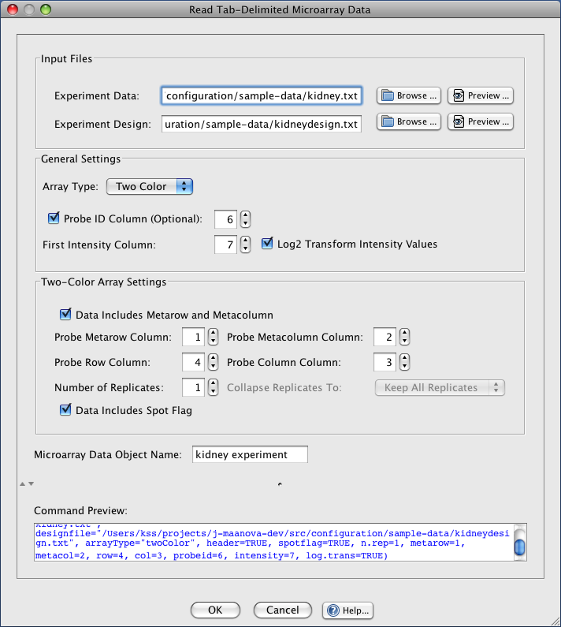
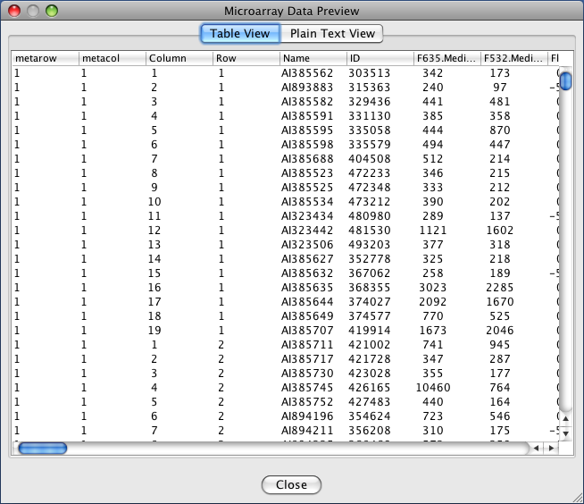

J/maanova can load tab-delimited data and design files which are formatted as specified in the documentation for R/maanova's read.madata(...) function.

Read Tab-Delimited Data Dialog
Use the Browse... buttons to select the data and design files to load. You can also use the Preview.. button to inspect the files before loading them.

Preview Data Dialog
The General Settings section has options that can be applied to the data whether it's a one-color or two-color experiment:
Array Type: select "Two Color" if the experiment uses two color microarray data
Probe ID Column: tell J/maanova which column in the data file contains the Probe ID's. If this option is not checked then the probe's row number will be used instead.
First Intensity Column: set this value to the first column number in the data file that contains microarray intensity values
Log2 Transform Intensity Values: select this option if the data has not yet been normalized and needs to be log transformed
These settings will only be enabled if Array Type in General Settings is set to Two Color.
Data Includes Metarow and MetaColumn: this option should be selected only if the data file has columns which contain each probe[set]'s metarow and metacolumn
Probe Metarow Column: the column number in the data file which contains probe[set] meta-row values (only enabled if the Data Includes Metarow and Metacolumn option is selected
Probe Metacolumn Column: the column number in the data file which contains probe[set] meta-column values (only enabled if the Data Includes Metarow and Metacolumn option is selected
Probe Row Column: the column number in the data file which contains probe[set] row values
Probe Column Column: the column number in the data file which contains probe[set] column values